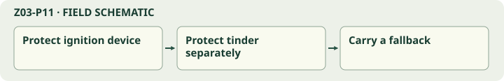

Z03-P11 · Fire and ignition
Keep ignition supplies dry
Protect the ignition and first fuel materials until a permitted use.
When it applies · Packing for wet or cold travel. All fire use depends on site, weather and restrictions.
Equipment · Suitable ignition device, dry tinder and a waterproof or weather-resistant storage system.

Actions
- Carry a familiar ignition option and protect it against moisture. Keep tinder dry and separate from wet gear.[C11, C03]
- Make access and status checks while the device is cold. Keep it separate from fuel containers and follow its instructions.[C11, ED]
- Carry independent lighting and insulation. A dry ignition kit is one option, with an established no-fire alternative.[C11, E02, C08]
Verify · In a dry practice check, locate the ignition kit and backup light without emptying the pack.[ED]
Stop or change course · Reject damaged equipment or damp material you cannot verify and use a no-fire fallback.[C03, C08, ED]
Evidence and editorial notes
- C03 · USDA Forest Service / Smokey Bear · Smokey Bear’s Campfire Safety Guide
- Build your campfire > Tinder, kindling, fuel · Outdoor authorized campfire
Dry tinder, small kindling and larger fuel serve different roles. Gather materials before ignition. Avoid accelerants.
Primary source · checked 2026-11-24 - C08 · NWS · What To Do If You're Caught in a Winter Storm
- Outside > If there is no shelter nearby · Stranded outdoors during a winter storm
Seek shelter and block wind and wet exposure. Reduce heat loss from contact with snow or ground.
Primary source · checked 2026-11-24 - C11 · NPS · Ten Essentials
- Fire and illumination · Outdoor emergency kit
Carry a dependable ignition option and protect it from moisture. Carry a separate light.
Primary source · checked 2026-11-24 - E02 · NPS · Ten Essentials
- Navigation; insulation; emergency shelter; emergency food and water · Outdoor trips; adjust kit to season and route
Carry essential systems including navigation, insulation, light, water and emergency shelter.
Primary source · checked 2026-11-24
Source lineage · NPS Ten Essentials and B012 P20.